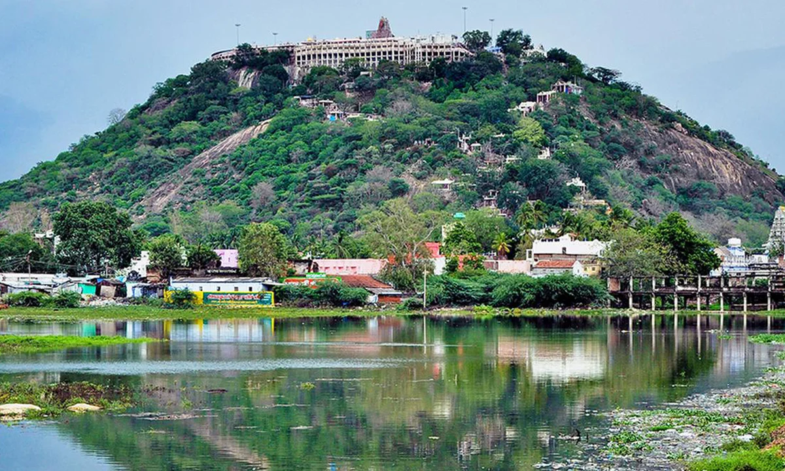
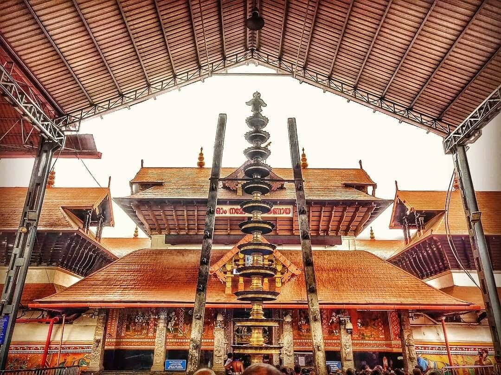

Spiritual Journey
Kerala & Tamil Nadu Pilgrim Tour



About This Tour
Our Kerala & Tamil Nadu Pilgrim Tour is designed for devotees who wish to embark on a spiritually enriching journey across the holiest shrines of South India. We handle all logistics with care and sensitivity — from comfortable vehicle arrangements to accommodation close to temples — so you can focus entirely on your pilgrimage.
The tour is fully flexible — we can customise the route, sequence and number of days based on your group's requirements, the pilgrimage season (especially Sabarimala), and any additional shrines you wish to visit. Contact us to discuss your specific needs.
Sacred Sites Covered
Sabarimala
Sacred abode of Lord Ayyappa nestled in the Periyar Tiger Reserve. Open only during pilgrimage season (November to January and Vishu).
Guruvayur
The Guruvayur Sri Krishna Temple — one of the most sacred Vishnu temples in India, known as the Dwarka of the South.
Chottanikara
The Chottanikara Bhagavathy Temple near Ernakulam — revered for the presiding deity Rajarajeswari and her healing powers.
Palani (Tamil Nadu)
Arulmigu Dhandayuthapani Swamy Temple — one of the six abodes of Lord Murugan, set dramatically atop a rocky hill.
Thanjavur (Tamil Nadu)
The UNESCO-listed Brihadeeswara Temple — a 1,000-year-old Chola masterpiece dedicated to Lord Shiva, renowned for its 216-ft vimana.
Sample 5-Day Itinerary
This is a representative schedule. Routes and duration are adjusted based on your group's requirements and the Sabarimala season calendar.
Day 01
Ernakulam → Chottanikara → Guruvayur
Start from Ernakulam with a morning darshan at Chottanikara Bhagavathy Temple. Drive to Guruvayur for afternoon darshan at Sri Krishna Temple — one of the most visited temples in India. Check in to accommodation near the temple. Overnight in Guruvayur.
Day 02
Guruvayur → Palani (Tamil Nadu)
Early morning darshan at Guruvayur. Drive to Palani — home of the Dhandayuthapani Swamy Temple atop a granite hill. Take the winch car or climb the 656 steps. Obtain prasad and spend time in prayer. Check in to Palani hotel. Overnight in Palani.
Day 03
Palani → Thanjavur
Drive to the cultural capital of Tamil Nadu — Thanjavur. Visit the magnificent Brihadeeswara Temple (Big Temple), a UNESCO World Heritage Site. Also visit Thanjavur Art Gallery and Saraswathi Mahal Library. Overnight in Thanjavur.
Day 04
Thanjavur → Sabarimala (via Ernakulam)
Drive back to Kerala. Visit Sabarimala — the sacred hillshrine of Lord Ayyappa (during the open season: Mandalam, Makaravilakku or Vishu periods). Please note: Sabarimala requires prior preparation (41-day vratham/deeksha). Our team advises on all requirements. Overnight en route or at base camp.
Day 05
Return to Ernakulam / Drop at Preferred Location
Return journey to Ernakulam or your preferred drop point. The tour concludes with the blessings of the divine. We can arrange drops at Kochi Airport, Ernakulam Station or any other location in Kerala.
Important Notes
- Sabarimala is open only during specific pilgrimage seasons. We plan your trip around the official season calendar.
- Devotees visiting Sabarimala must observe 41 days of deeksha (vratham) prior to the pilgrimage. We provide full guidance on preparation.
- Dress code requirements apply at all temples. We advise on appropriate attire for each shrine.
- All our pilgrim tour drivers are experienced, respectful and familiar with temple timings, entry protocols and local customs.
- This tour is available for groups of 2–20 persons. We offer tempo travellers for larger groups.
Included
- Private AC vehicle & experienced driver throughout
- Accommodation near temples (as per programme)
- Daily breakfast
- Pickup & drop at Ernakulam or preferred location
- All fuel, tolls & driver allowance
- Temple timing & darshan guidance
- GST and service charges
Excluded
- Temple entry fees & special darshan tickets
- Prasad and offerings
- Meals other than breakfast
- Personal expenses
- Sabarimala trekking fees & guide
- Travel insurance
You Might Also Like